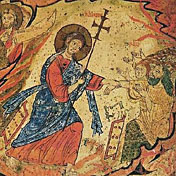

-
... Para comprender al hombre y sus necesidades, para conocerle en lo que tiene de esencial, no hay que oponer entre sí la evidencia de vuestras verdades. Sí, tenéis razón, tenéis todos razón. La lógica lo demuestra todo. Tiene razón, incluso, aquél que carga en la cuenta de los jorobados las desdichas del mundo. Si declaramos la guerra a los jorobados pronto aprenderemos a exaltarnos. Vengaremos los crímenes de los jorobados. Y, ciertamente, los jorobados también cometen crímenes.
Si se intenta extraer lo esencial es preciso olvidar un instante las divisiones que, una vez admitidas, arrastran todo un Corán de verdades inquebrantables y el fanatismo que de ahí deriva.
Se puede alinear a los hombres en hombres de derecha y hombres de izquierda, en jorobados y no jorobados, en fascistas y demócratas y estas distinciones son inatacables. Pero la verdad, vosotros lo sabéis, es lo que simplifica el mundo y no lo que crea el caos.
La verdad es el lenguaje que se desprende de lo universal. Newton no ha "descubierto" una ley largo tiempo disimulada a la manera de una adivinanza. Newton ha efectuado una operación creadora. Ha fundado un lenguaje de hombre que pudiese expresar a la vez la caída de la manzana en un prado o la ascensión del sol: la verdad no es lo que se demuestra, es lo que simplifica.
¡Para qué discutir las ideologías! Si todas se demuestran, todas también se oponen y tales discusiones hacen desesperar de la salvación del hombre. Mientras que el hombre en todas partes, a nuestro alrededor, presenta las mismas necesidades.
Nosotros queremos ser liberados. El que da un golpe de azadón quiere conocer el sentido de su golpe de azadón. Y el golpe de azadón del presidiario que humilla al presidiario no es el mismo que el del explorador que engrandece al explorador. El presidio no reside allí donde se dan golpes de azadón. No se trata de horror material. El presidio reside allí donde se dan golpes de azadón que carecen de sentido, que no vinculan a quienes los dan con la comunidad de los hombres.
Y queremos evadirnos del presidio.
Existen doscientos millones de hombres en Europa que carecen de sentido y que quisieran nacer. La industria los ha arrancado al lenguaje de los linajes campesinos y los ha encerrado en esos ghetos enormes que se parecen a estaciones de clasificación, llenas de ruinas de vagones negros. Del fondo de las ciudades obreras quisieran ser despertados.
Hay otros, presos en el engranaje de todos los oficios, para los que están vedadas las alegrías del pionero, las alegrías religiosas, las alegrías del sabio.
Se ha creído que para engrandecerlos era suficiente vestirlos, alimentarlos, subvenir a todas sus necesidades. Y poco a poco, se ha fundado en ellos el pequeño burgués de Courteline, el político de aldea, el técnico cerrado a la vida interior. Si se les instruye bien, no por eso se les cultiva más.
...
A. de Saint-Exupéry, Tierra de hombres
El romanticismo del siglo XIX (ese pathos trágico, sentimental, con ínfulas de grandeza pseudopoética) no fue mucho más que la coartada de la burguesía reinante, dice -más o menos- Volkoff (sabroso el librito —algo panfletario, pero finamente, alegremente y concientemente panfletario).
Mutatis mutandi, eso se da siempre. Una forma de fariseísmo social. Hoy (en la sociedad ilustrada -porteña ... fubista- argentina) nuestros tristes hedonistas tienen la coartada de la sensibilidad social (y el compromiso, y la indignación, etc). Este podría ser un muestrario de fotos de esta sociedad que supimos conseguir.
Dice Beguin que Bloy creyó ver en la Primera Guerra las señales del apocalipsis tan esperado (por él) ... al principio. En 1915 (Bloy murió en 1917) ya se había desengañado: a lo sumo se trataba de una parodia de lo por venir.
En cuántos niveles puede retomarse esa idea...
Yendo de lo más a lo menos trivial:
- Lo que los mass-media cuentan, es una parodia
de lo que en verdad sucede.
- Lo que la gente lee, trasmite, discute, cree que
está sucediendo, es una parodia de lo que
en realidad sucede.
- Todo lo que pasa hoy, es la parodia
de lo que debe suceder; de lo
que espera -gimiendo- la creación; del
advenimiento inimaginable -como decía
el mismo Bloy.
Y acá habría que interponer un "pero" gigante, que yo no pienso meterme a escribir.
Terminando, para este fin de semana, la octava de Pascua; el de hoy, entonces, es un viernes "no penitencial" .
Y, de paso, hoy cae la fiesta de San Marcos.
Informe de mi visita de anoche a la Feria del Libro.
Más o menos como siempre (mal la señalización de los stands, pero es un detalle). Ya se sabe, no hay mucho más que en la avenida Corrientes, ni más barato; pero tampoco es tampoco es tan malo como dicen; en la abundancia siempre se encuentra algo.
Y aunque los libros se nos han ido por las nubes a los argentinos devaluados, yo tuve suerte y -revolviendo mesas de saldos, mayormente- me traje 8 libritos por $45 (lo que se dice un bibliófilo gasolero). Claro que me les quedé con ganas a unos cuantos caros...
Los más interesantes para mí (e inesperados; los hallazgos de la noche)
fueron estos dos:
"Elogio de la diferencia" de Vladimir Volkoff ($13); título
poco prometedor; pero Volkoff (
novelista ruso-francés "reaccionario" -"El montaje"
y "La reconversión son obritas maestras) siempre es interesante... para mí.
Esto es un ensayo, cosa que nunca leí de él, y me da curiosidad.
"Leon Bloy, místico del dolor", de Albert Beguin. Toda
una rareza que me alegró encontrar en la mesa de saldos del FCE (Fondo
de Cultura Económica) a $5. Incluye correspondencia inédita con Villiers
de l'Isle-Adam.
Otros: "Siete escritores conversos" de Carlos Pujol.
Sobre G. M. Hopkins, Chesterton, W. Waugh y ... Leon Bloy y otros;
no creo que sea gran cosa, pero visto el tema y el precio ($3 !)...
"Dios y la ciencia" de J. Guitton con I. Bogdanov;
también, barato ($6). Compré otro científico, de un tal
Manuel Etcheverría, pero éste por el precio solamente ($3).
Uno del gran Ruysbroek ("Tratado del Reino
de los Amadores de Dios") de una mesa de saldo ($3).
Uno histórico de Regine Pernoud, "América
del Sur en el siglo XVIII" ($5) ... y un diccionario
de sinónimos.
Comento, por si a alguien le interesa (o para dármelas de intelectual) sobre otros que me llamaron la atención y que no compré por falta de plata, de suficiente interés, o porque los tenía, o....
En mesas de saldos vi cosas como
Línea de fuego de Syria Polleti ($3),
Cruzando el umbral de la esperanza de Juan Pablo II ($5)
(y otros suyos al mismo precio), Iluminaciones de Rimbaud
( traducción y edición flojita, me pareció, pero... $5 ),
Tolkien de P. Arguijo ($3 ; una ganga).
A precios más "normales": digamos que el stand de Tusquets
fue uno de mis predilectos (ahí compré el de Volkoff) y me tentó
con cosas como "Obra poética" de H. Michaux (bilingüe),
novelas selectas de Graham Greene ("El poder y la gloria",
"El revés de la trama" y "El fin de la aventura", todo por $33;
pero la edición es medio berreta), muchos libros
de C. S. Lewis (editorial Bello) y colección "Metatemas"
sobre ciencia ("Los porqués de un escriba filósofo"
de M. Gardner, que me recomendara Juan Pablo y que,
hojéandolo, pintaba interesante).
En otros: un libro sobre Rimbaud (últimos años y correspondencia)
por su hermana Isabelle ($15); selección bilingüe
de Leopardi ($20) ; "Tolkien: hombre y mito" , de
J. Pearce (buen autor) ($15); "Rusia
bajo los escombros", de Solyenitzin ($12). Mencionemos
también que Riverside tiene los libros de Wodehouse,
de la colección compactos de Anagrama.
Una mención especial para el
stand de "Agape": de los varios puestos
"católicos" que hay -demasiados-, el mejor
(la mayoría abundan en lo que se vende:
tapas de arcos iris, flores, sonrisas
y soles ... y esa literatura blandengue
-De Mello en el mejor de los casos- que
ya saben... sea feliz en cinco minutos)
[nota aparte, a desarrollar,
como un signo del catolicismo argentino:
ni un libro de Castellani en toda la Feria,
si no me equivoco]...
"Ágape" me tentó con un tomo
de la "Historia de la filosofía" de la BAC
($90); y había mucho material bueno;
y de ahí lo de Pearce, Pujol y Arguijo.
Vale mencionar también que ya se encuentra la
última encíclica del Papa.
Y finalmente, los que verdaderamente me dejaron con las ganas:
En el puesto de "Guadalquivir", la editorial
Trotta (que edita material para intelectuales
sofisticados, esas mezclas de izquierda, psicoanálisis
y misticismo posmoderno) sigue publicando a mi
venerada Simone Weil: a sus inalcanzables "Cuadernos"
($240 !) ahora agregaron "El conocimiento sobrenatural"
($96). Y, cosa que me sorprendió, también acaban de publicar
las "Visiones de Juliana de Norwich" ($70), una
mística
inglesa de la Edad Media.
En el puesto de "Paidós", hay un sección de
orientalismo/religión muy interesante, con cosas
de Eliade, Guenon, etc. El que me dejó con más
ganas fue el de Louis de Massignon sobre el
místico musulmán Al-Hallaj ($75), del que alguna
vez hablaremos... en cuanto nos informemos un poco mejor.
De esos mails chistosos que siempre andan dando vueltas ...
Cuantan que Argentina tenía escondidas
armas de destrucción masiva...
y EEUU entonces decidió que había que tomar
medidas.
He aquí la crónica de la guerra de los catorce días:
Apenas ingresan en aguas territoriales argentinas, todas encallan (la empresa de dragado no trabaja desde hace dos meses ya que el gobierno argentino no le paga los subsidios prometidos en los contratos de privatización).
Las bombas dejan pocas secuelas, y pasan mayormente
desapercibidas. Varias impactan edificios
deshabitados, abortados o en proceso de demolición:
la ex Casa Cuna, el hospital Rawson, etc.
Algunas impactan en las calle, y se pierden en las profundidades
de los baches y las reparaciones iniciadas por el intendente
antes de las últimas elecciones.
El conurbano resulta un territorio demasiado difícil; la
agresividad de las patotas (varias de las cuales los confunden
con militares argentinos) y la audacia de los chorros hacen estragos.
Para desmoralizar a la población, destruyen los centros de comunicaciones
(canales de tv, diarios, radios).
El pueblo festeja alborozado.
Se debe suspender, ya que los gremios se pelean
por su distribución, exigen la entrega de planes Trabajar
y la reducción de la jornada laboral.
Solicitud rechazada. Motivos: no fue presentada por triplicado,
falta autenticación de las firmas ante escribano público, pago de sello fiscal y la oficina respectiva trabaja solo los días pares de los meses impares en horas múltiplo de tres.
(recuerda "La guerra de los mundos" de Wells, no ?)
Quién lo diría... Estamos cumpliendo un año hoy (aunque con un mes de vacaciones en el medio). 1070 posts (1070/(365-28) = 3.17 posts por día) ... y quién sabe cuántas horas. Sería tiempo de miradas retrospectivas, balances, propósitos y esas cosas, pero -una vez más- lo dejamos para otro día.
Gracias a los que leen, linkean o comentan.
Leído ayer en misa, el milagro de San Pedro, de los Hechos de los Apóstoles (cap 3)
Pedro y Juan subían al Templo para la oración de la hora nona.
Había un hombre, tullido desde su nacimiento, al que llevaban y ponían todos los días junto a la puerta del Templo llamada Hermosa para que pidiera limosna a los que entraban en el Templo.
Este, al ver a Pedro y a Juan que iban a entrar en el Templo, les pidió una limosna.
Pedro fijó en él la mirada juntamente con Juan, y le dijo: «Míranos.»
El les miraba con fijeza esperando recibir algo de ellos.
Pedro le dijo: «No tengo plata ni oro; pero lo que tengo, te doy: en nombre de Jesucristo de Nazareth, levántate y camina.»
Y tomándole de la mano derecha le levantó. Al instante cobraron fuerza sus pies y tobillos,
y de un salto se puso en pie y andaba. Entró con ellos en el Templo andando, saltando y alabando a Dios.
Se cuenta que un Papa estaba mostrando a un santo monje algunas de "sus " posesiones; el monje estaba deslumbrado ante las joyas y piezas de oro, y el papa le decía, en tono jocoso:
«Ya ves, hoy Pedro no puede decir aquello de "No tengo plata ni oro..."».
Y el monje le tiró este balde de agua fría:
«No.... y tampoco puede decir "levántate y camina"»
(Anoto para desarrollar en otro momento:
1. El anticlericalismo -interno, de última una especie de sátira contra uno mismo-
como ingrediente de la salud católica, como vacuna contra la autoindulgencia.
2. Lo anterior relacionado con la observación de Kierkegaard
respecto del catolicismo: El protestantismo corre el riesgo
de degenerar en mundanidad, al punto que lo más mundano sea
tenido por lo más religioso, decía K -luterano-;
el catolicismo no, porque no olvida nunca que "los hombres
somos unos malandras".
3. Relacionar lo anterior con las observaciones de
Max Weber: la aparente paradoja de que el protestantismo pietista
haya impulsado el trabajo mundano; el capitalismo, eeuu, etc
)
Cualquiera que frecuenta este mundo (internet, computadoras, etc) sabe lo que es un nerd: esa especie de enfermo de las computadoras, que tiene la mente absorbida por internet, lenguajes de programación, juegos de computadora, y todo lo que lo acompaña. Hay páginas chistosas del tipo "Sabés que sos un nerd si ... ".
Bueno. Uno de los blogs de St. Blog se llama justamente The Catholic Nerd Blog y es una especie de trasposición de ese concepto del mundo informático al mundo religioso (católico). Así, por ejemplo: sabés que sos un catholic-nerd cuando:
- - tenés más imágenes de santos que de parientes en tus paredes - escritorio - biblioteca
- te parece romántica la idea de intercambiar rosarios con tu novia/o.
- tenés pesadillas en las que te encontrás defendiendo tu fe ante los ataques de militantes feministas
- alguien te dice que quiere ser un santo, y lo tomás en serio
- etc
Y me acordé de que, para aquel blog, un católico-nerd es el que, en lugar de comparar la confesión con la ducha, compara la ducha con la confesión [*] (pues para un católico-nerd, confesarse sería una experiencia más familiar -no sé si más frecuente!- que bañarse).
Bueno ... entonces, parece que yo no califico como un católico-nerd ... Menos mal.
Del libro de finales artísticos (tomo de autores argentinos) de Zoilo Caputto que comentaba ayer, acá va un final de Luciano W. Cámara.
Los ajedrecistas de por acá lo recordarán como columnista en varias revistas; los finales artísticos no eran lo suyo, y esta obrita es una de sus pocas composiciones. Es sencilla, pero tiene su elegancia.
Y además tiene una pista falsa (en la que yo me ensarté cuando traté de resolverlo) : una variante completamente diferente de la idea temática, con muchos toques artísticos, en la que las blancas casi ganan ... pero pierden.
El enunciado es: juegan blancan y hacen tablas.
Sobre la inexistencia del azar, según un silogismo (?) de Leon Bloy:
-
El Azar -considerado como ente posible, ente de razón-
viene a ser como la Providencia de los Imbéciles.
Pero la Justicia exige que los imbéciles carezcan de una Providencia (!).
Ergo: el Azar no existe.
Ya pasó la cuaresma. Pasó el tiempo de penitencia.
Lástima, no poder aprovechar la maratón de lectura que organiza hoy en la Feria del Libro para celebrar los cuarenta años de Rayuela.
Hubiera sido una mortificación alucinante, escuchar tres horas de Cortázar en la voz de Selva Alemán, Pedro Aznar y Magdalena Ruiz Guiñazú (y respirar el aliento de esa religiosidad popular...).
Aunque es cierto que tampoco hay que exagerar ; lo de "todo en su medida y armoniosamente" también vale para la ascesis...
En estos días pasados, estuvieron tirándole algunos palitos a Urs von Balthasar en St. Blog... Bah, no es para tanto; digamos mejor que varios bloggers (y de los buenos) expresaron sus opiniones sobre este teólogo, y varias de ellas fueron al menos parcialmente (y humildemente) negativas ... Ver las entradas recientes en Disputations y Flos Carmeli con links. (los que conocen el paño, sospecharán que no se trata en este caso de las estólidas acusaciones de modernismo que frecuentan los conocidos tradicionalistas-guardianes-de-la-ortodoxia).
Hoy Gerard salió en su defensa...
Yo no opino nada. Leí sólo un par de libritos, no muy importantes (el de Santa Teresita y el tratado sobre el Infierno) y aunque hubiera leído más, igual no me daría el cuero... Lo que leí, al menos, me resultó simpático... más simpático que Garrigou-Lagrange, pongamos por caso... (pero menos que Santo Tomás ! ) ...
De paso, Tom de Disputations trae un link a una introducción a la trilogía de UvB.
Por otro lado, en el post originador , -y en el siguiente- Tom hace algunas consideraciones oportunas, referidas a mantener la atención y el sentido crítico despiertos a la hora de -por ejemplo- leer una encíclia, para saber discernir en qué medida uno está de acuerdo con cada cosa, y para tomar conciencia de los pasajes que nos presentan un "factor Ginger" alto (i.e.: los pasajes que nos suenan a puro palabrerío insustancial, no informativo o incomprensible para nosotros).
Fui a misa de ocho hoy a la mañana. Mentalmente hice un censo, contando desde mi banco (fila ocho) hacia adelante, que arrojó el siguiente resultado :
varones: 2
Y menos mal que, como todas las personas informadas sabemos, se trata de una Iglesia machista y misógina, que discrimina a la mujer y etc, etc etc , que si no...
Pascua. Tiempo de gracia para todos, y especialmente para los (ex)catecúmenos que el domingo entraron "oficialmente" en la Iglesia.
Linkeo entonces para que lean a (y se alegren con): Will, Sean, Katherine, Joe...
que yo les daré descanso." (Mt 11-28)
..."¡Vengan a mí!" Pues El, el que invita, sabe
que precisamente pertenece al verdadero padecimiento el ausentarse uno lejos de sí
mismo y consumirse en quieto desconsuelo, sin tener el ánimo de confiarse a
nadie, y mucho menos tener la confianza de esperar ayuda.
¡Oh, humana compasión!, quizá seas a veces respetable dominio de sí mismo, quizá también a
veces seas verdadera e íntima compasión, cuando renuncias a preguntar a aquél de
quien sospechas que vive y padece un sufrimiento oculto; pero ¿cuántas veces no se
debe esto a cierta prudencia, que no desea enterarse excesivamente?
¡Oh, humana
compasión! , ¡cuántas veces eras solamente curiosidad, cuando te
entrometías en el secreto de un doliente, y con qué frecuencia no sentiste como
una molestia, casi como un castigo de tu curiosidad, que él aceptara la invitación
y viniera a ti !
Pero Aquél, que dice esta liberadora palabra: "¡Vengan!", no se
engaña a sí mismo al decirla, ni tampoco te engañará a ti, si vienes a
él, para hallar descanso arrojando en él tu carga.
El sigue el impulso de su
corazón al decir esta palabra, y su corazón sigue a la palabra —si tú sigues la
palabra, ella te acompañará entonces nuevamente retornando hacia su corazón; es una
consecuencia, lo uno se sigue de lo otro—.
¡Oh, si tú solamente quisieras seguir la
invitación!
"¡Vengan a mí!"
Pues El supone que los que están atribulados y cargados
están muy cansados y forzados, próximos a la inanición, que, como en el letargo, se
les volvió a olvidar que existe el consuelo. ¡Ay!, o El sabe que es demasiado
cierto que no hay ningún consuelo ni ninguna ayuda, si no se busca junto a El, y
por eso tiene que llamarlos " ¡Vengan a mí ! "
"¡Vengan a mí!" Ya que toda sociedad
tiene ciertamente un símbolo u otra cosa por la que se distingue a quien pertenece
a ella; y cuando la muchacha está adornada de cierta forma peculiar se sabe que va
al baile... Tú
no necesitas llevar la señal distintiva en lo exterior y sensible; ven solamente
con la cabeza ungida y el rostro limpio, cuando solamente en lo interior estés
atribulado y cargado.
"¡Vengan a mí!" ¡Oh, no te quedes parado, ni muy meditabundo,
piensa que por cada momento que te quedes parado después de haber oído la
invitación, oirás en el momento siguiente su llamada más débil y que así se te
aleja, por más que tú permanezcas en el sitio.
"¡Vengan a mí!" ¡Oh!, por muy cansado y
fatigado que estés de trabajar, o del largo, largo y, no obstante, hasta ahora
inútil caminar en pos de ayuda y redención ; aunque estés en situación de no poder
dar un paso más, ni siquiera sostenerte ya por un solo instante sin que desmayes :
¡oh, da un solo paso todavía, aquí está el descanso!
"¡Vengan a mí!" ¡Ay!, pero si
existiera uno solamente, que fuese tan desgraciado que no pudiera venir:
un suspiro basta ; pues si suspiras por El, también esto significa venir a El.
Ay, no solamente aquel endemoniado fue poseído por
un espíritu mudo; todo padecimiento que no
empieza enmudeciendo al que sufre, significa muy poco, tan poco como amor que no
se hace silencioso ; los dolientes, cuya lengua suelta desparrama a los cuatro vientos
su historia de sufrimientos, no están ni atribulados ni agobiados.
Por eso, el que invita no se queda a esperar a que los atribulados y agobiados vengan a El,
sino que los llama con amor; y quizá no serviría de nada toda su presteza por
ayudar, si no dijera aquella palabra y con ella misma diese el primer paso; pues
mientras El grita esta palabra ("vengan a mí"), ya está viniendo a ellos.
Soren Kierkegaard - Ejercitación del cristianismo
Leyendo estos días (además de los siempre presentes Kierkegaard y Santa Teresita/Urs von Balthasar ): "En el camino", de Kerouac (no me atrapó demasiado por ahora; igual, la traducción me cae medio mal); algunas cositas sueltas de Borges (bueh, todo lo de Borges son "cositas sueltas") y unos relatos (del "pequeño mundo burgués") de Guareschi ; los compré el domingo (Borges y Gaureschi) en Parque Centenario, junto con un librito notable (e ignoto) sobre finales artísticos de ajedrez de un tal Zoilo Caputto (argentino).... y unas "Savarese".
Y estuve leyendo (por arriba y con poca paciencia, lo admito) un ensayito de Turing (un prócer de la computación) "Pueden las máquinas pensar?". En lugar de despejarme dudas, me dejó con una duda nueva: "Turing puede (podía) pensar ?". Verdaderamente, me pareció de cuarta; pero bueh, tal vez lo agarré a contramano...
El viejo sitio de D. A. Storm sobre Kierkegaard ha sido remodelado, y ahora con dominio propio: www.sorenkierkegaard.org.
Al que le interese S. K. y lea inglés, le conviene darse una vuelta.
Clarín, sintonizando con la sensibilidad de su público lector, se lamenta de que los muertos iraquíes no tengan cruces para marcar sus tumbas.
Oficio de Viernes Santo. Iglesia llena. Están leyendo el relato de la Pasión.
Viene el momento más trágico y más solemne de todo el año: la muerte de Cristo.
Suena un teléfono celular.
A: (saca el celular del bolsillo, lo abre, mira el display
... mientras sigue sonando)
B: (algo más adelante, gira
la cabeza, mirando con disgusto ostentoso)
A: (ni apaga, ni se va; atiende) Hola ? Quién es ?...
B: (vano intento de fulminarlo con la típica mirada furiosa de vieja escandalizada)
A: (habla un rato en voz queda, postura encorvada y apenas culpable ; cuelga)
Pasan tres segundos.
Es el preciso momento en que se lee la muerte de Jesús; todos
se van poniendo de rodillas.
Vuelve a sonar, el mismo celular.
A: (atiende, mientras flexiona fugazmente una rodilla)
Hola ?
B: (explotando ) ¿Puede apagar eso, por favor?
(muy acentuado, eso último)
A: (gesto -leve encoger de hombros y extender de mano-
de impotencia; no sabe apagar el telefóno ? no puede renunciar
a atender una llamada ? vaya a saber ...)
Alguna voz de mujer, más atrás, se solidariza con el repudio.
B: (se arrodilla rezongando y meneando la cabeza, en el rol
de anciana piadosa ofendida) ... viernes santo ! hablando por teléfono, en la iglesia !... (murmullo que se va apagando, junto con el celular; todos quedan arrodillados en silencio, al fin...).
Y eso fue todo. Actuaron: En el papel de A: un señor corpulento de bigotes, cara de buenazo tosco (más pinta de chacarero que de yuppie). En el papel de B: yo.
¡Qué linda Vigilia Pascual la de anoche!
Fui -un poco a la aventura- a la iglesia (basílica?) de San José de Flores, y estuvo muy bien todo. Verdad es que la belleza de la liturgia en sí es lo que se impone; pero mi aplauso por el cuidado de los detalles (cantos, cantantes, relatores), la reverencia y el buen gusto.
Equilibrio en la música (antigua y moderna, órgano y guitarra); la letanía de los santos, a guitarra y bombo, ritmo norteño, estuvo emocionante (y especialmente para mí, porque tras Santa Teresa de Jesús metieron a Santa Teresita).
Todo el pregón, y todas las lecturas "preliminares" (del Antiguo Testamento) se hicieron con la iglesia totalmente a oscuras; el efecto de la luz (con las velas primero; con todas las luces del templo después) fue impresionante; y encimar repartieron a todo el mundo velas que -milagro!- no te chorreaban ni una gota...
Me sigue sin convencer la música de ese "Gloria" que se canta ahora... pero bueh, todo no se puede pedir.
(sólo para argentinos; a propósito de una solicitada que leí hoy; y no, no es a favor ni en contra de ningún 'candidato'....)
-
Ley de López Murphy n° 38:
«Si Marcos Aguinis y J. Sebrelli están de acuerdo en algo, entonces ambos están equivocados»
(Hay una versión más fuerte que afirma que la conclusión también vale aunque no se verifique la premisa. Y se discute la siguiente conjetura -difícil de conciliar con los axiomas de la lógica aristotélica, pero apoyada por numerosas observaciones- :
«Si Marcos Aguinis afirma : "P" y J. Sebrelli afirma "no P", entonces la proposición "P" es falsa, y la proposición "no P" también»).
Del Exultet (pregón pascual, que se cantó en la celebración de la Vigilia):

... Y así, esta noche santa
Esta es la noche de que estaba escrito:
«Será la noche clara como el día,
la noche iluminada por mi gozo.»
ahuyenta los pecados,
lava las culpas,
devuelve la inocencia a los caídos,
la alegría a los tristes,
expulsa el odio,
trae la concordia,
humilla a los poderosos.
¡Felices Pascuas de resurrección para todos!